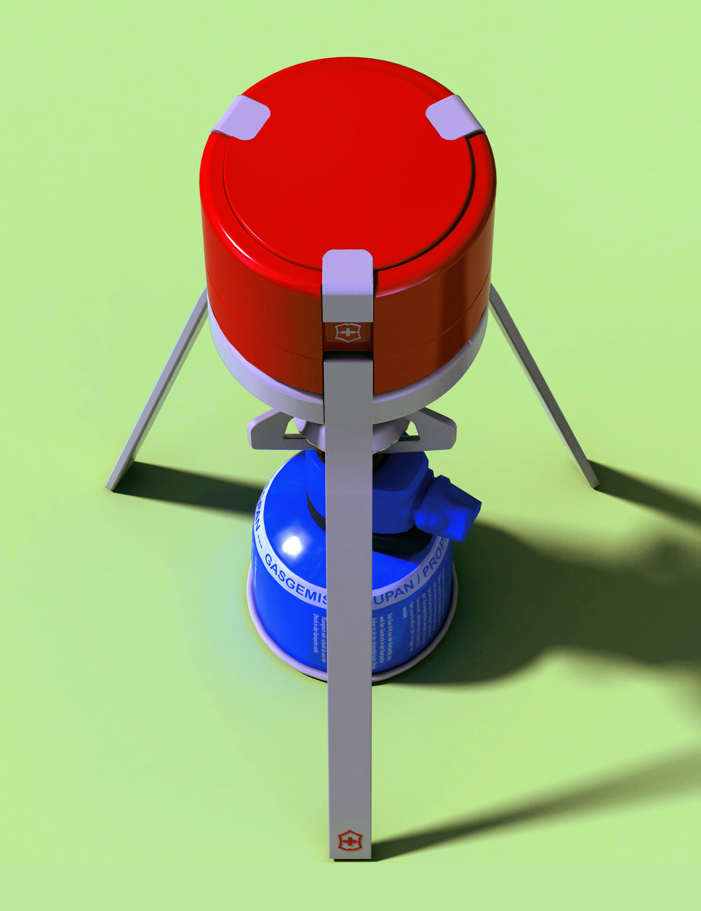
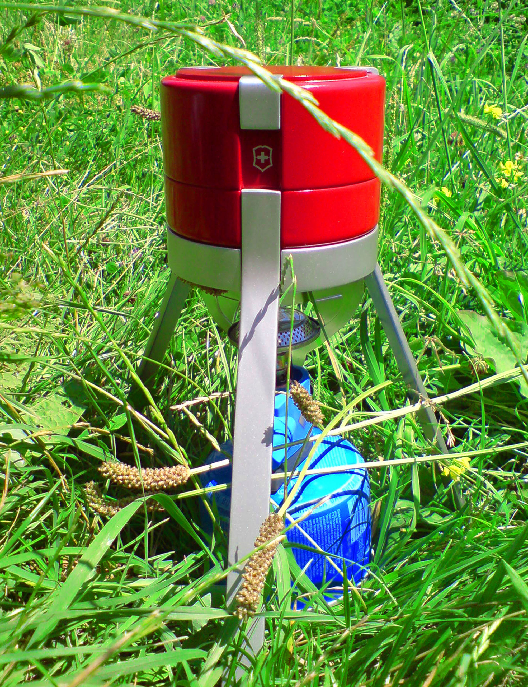
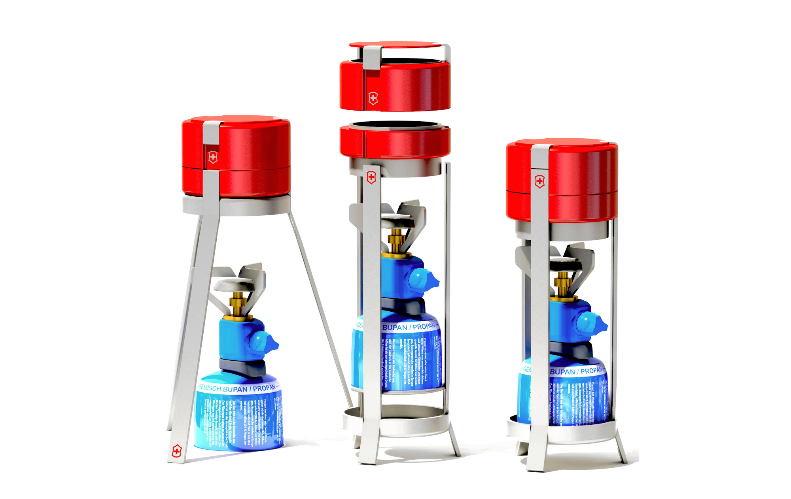

Victorinox



This was my first Product Design Project ever at University. The briefing was to create a coffee percelator based on the Senseo-Pad-System for a specific brand. I decided to do a product for Victorinox. So the result expresses the simple and unique design language of the brand. The concept is based on the classic Mocca Express. Heat under the percelator creates pressure and makes the water move upwards through the coffee powder. This concept works with every source of heat, like ordinary gasburners used for camping.
Mein erstes Produktdesign-Projekt an der Hochschule. Aufgabe war eine Kaffeemaschine basierend auf dem Senseo System für eine selbstgewählte Marke zu entwerfen. Ich entschied mich für Victorinox. Der Entwurf spiegelt die gestalterischen Merkmale der Marke wieder. Das Konzept basiert auf dem einfachen Prinzip des klassischen Mokka-Express. Hitze unter der Maschine erzeugt Druck, der das heiße Wasser durch das Kaffeepulver nach oben drückt. Dieses Prinzip eignet sich für beliebige Hitzequellen, wie Gasbrenner aus dem Campingbereich.